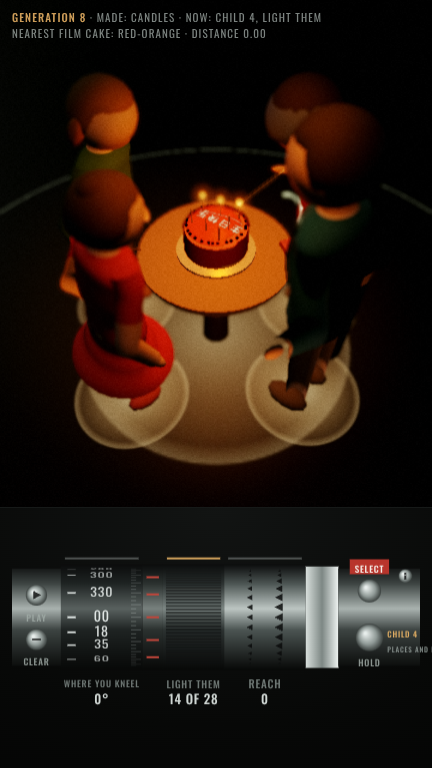

No independent critic has run yet: this builder had no Agent tool. The coordinator runs it. Builder's own reading, not a verdict: the whole cake is made by the children's hands on screen; the look does not yet meet FILM-BAR.md (see below).
Believability against the film (FILM-BAR.md): plain-lit stylised children and a generic grade, not the memory's look. look.js and holo.js (arc, readout) are now wired into the page, but no proof has been recorded with them: one frame took 80 s to render here, and the post pipeline logs a GL feedback-loop warning. Next: record with LOOK on a faster renderer, and switch the device to HOLO.device. Secondary: the sleeve badge faces away from the default camera for most of the run (see README).
stress-strip.png (raise, fold, reach, twist; left linear blending only, right corrected)
| loading tests.json… |
README.md · rig.js (mesh, weights, rest matrices, correctives, IK, measurement) · tests.js · tests.json · trace.json · record.js